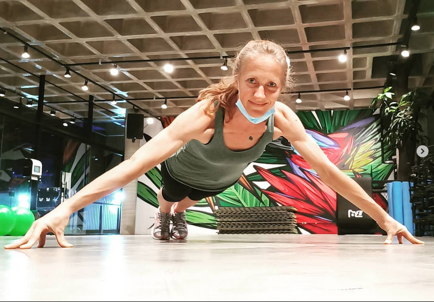
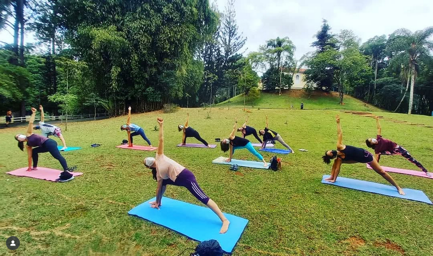
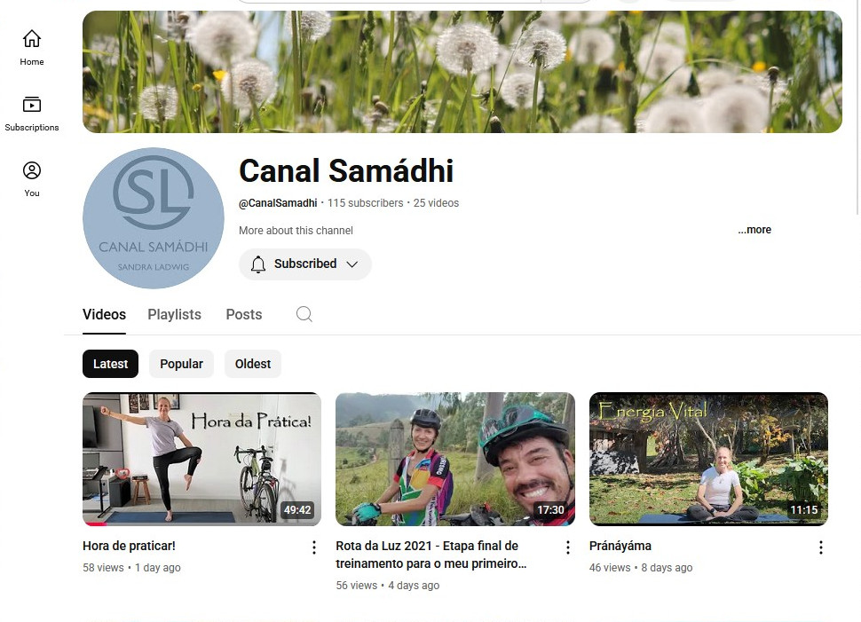

Sandra Ladwig
Iniciou as práticas em 2012 e se tornou instrutora em 2017, recebendo seu certificado para ministrar aulas.
Desde então, vem compartilhando esse conhecimento, ministrando aulas em academias, empresas e no formato personal.


Também oferece aulas gratuitas como voluntária no Horto, com práticas abertas à comunidade.
Com o novo projeto, o Canal Samádhi no YouTube, compartilha experiências e aprendizados de forma acessível.
Através do ciclismo e das técnicas do Yôga, inspira mais energia e presença no dia a dia.